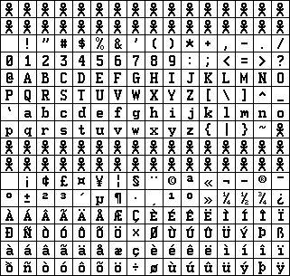
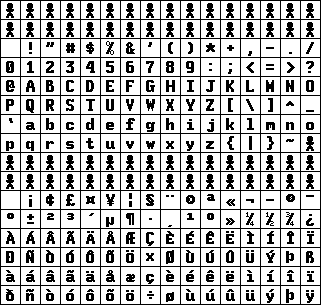

FuzzFonts is a (small) set of fonts. (Well, there's only one font right now, but I hope to make more!) These are offered with the usual (MITesque) license:
Copyright © 2002 Dan Bornstein, danfuzz@milk.com. All rights reserved, except as follows:
Permission is hereby granted, free of charge, to any person obtaining a copy of this software and associated documentation files (the "Software"), to deal in the Software without restriction, including without limitation the rights to use, copy, modify, merge, publish, distribute, sublicense, and/or sell copies of the Software, and to permit persons to whom the Software is furnished to do so, subject to the condition that the above copyright notice and this permission notice shall be included in all copies or substantial portions of the Software.
THE SOFTWARE IS PROVIDED "AS IS", WITHOUT WARRANTY OF ANY KIND, EXPRESS OR IMPLIED, INCLUDING BUT NOT LIMITED TO THE WARRANTIES OF MERCHANTABILITY, FITNESS FOR A PARTICULAR PURPOSE AND NONINFRINGEMENT. IN NO EVENT SHALL THE AUTHORS OR COPYRIGHT HOLDERS BE LIABLE FOR ANY CLAIM, DAMAGES OR OTHER LIABILITY, WHETHER IN AN ACTION OF CONTRACT, TORT OR OTHERWISE, ARISING FROM, OUT OF OR IN CONNECTION WITH THE SOFTWARE OR THE USE OR OTHER DEALINGS IN THE SOFTWARE.
Elseif is a programmer's screen font, meant for legible display on high-resolution displays. I developed it because, when I upgraded my video card to one that did 1600x1200, I was no longer able to find a font which I found legible enough. The characters this font makes particulary distinguishable are:
I l 1 ! | [ { ( ) } ] O 0 8 B & @ ` ' , . : ;And, probably much to the chagrin of my brother, I made a point to make standard emoticons look decent (e.g., no off-center eyes).
This font is still a work-in-progress. As of this writing, only 15 point medium and bold bitmaps are done, but there are no oblique versions at all, nor is there a set of outlines.
|  |  |